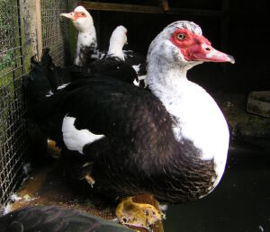
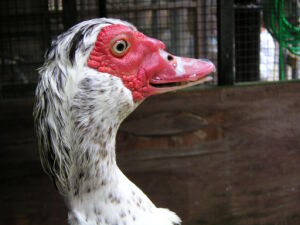
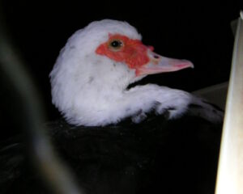
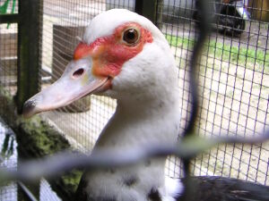
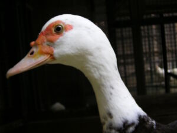
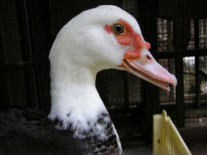

| バリケンジャー/ | ボス/ | 側近ズ/ | 四天王/ | 三人官女/ | 軍団長/ | 戦闘員/ |
| バリケン |  | |
| 分類 | カモ目カモ科 | |
| 属名 | Cairina | |
| 種小名 | moschata var. | |
| 亜種名 | domestica | |
| 特徴 |
雄 全身緑色光沢のある黒。全身が白いもの、灰色のもの、この3色が様々な割合で混じるものもいる。目の周囲と額は赤い皮膚が裸出し、突起がある。嘴は淡いピンク色。黒が混じるものもいる。足は短くて淡い橙色。 雌 雌雄同色。 |
|
| メモ | バリケンについて語る | |
| おっさん |  | |
| 性別 | ♂ | |
| 特徴 | 顔の皮膚がとても赤い。 羽根が少しボロっちい。 |
|
| 名前の由来 | とにかく見た目がおっさんみたいだから。 実は最初はおやっさんだった。 命名はNAN。 |
|
| メモ | おそらく唯一のオス。 おっさんがハアハアと鳴いている様はかなり異様です。 飼育担当のおっちゃんに先は長くないと言われながらも、元気に暮らしてます。 |
|
| 華子 |  | |
| 性別 | ♀ | |
| 特徴 | 顔の皮膚が赤い。 首の付け根あたりから黒い。 |
|
| 名前の由来 | ||
| メモ | とても美人さんなバリケン。 羽根が綺麗で美しい 2005年7月ごろにお星様になってしまったようです……（泣） |
|
| はくさい |  | |
| 性別 | ♀ | |
| 特徴 | 顔の皮膚が少しオレンジがかってる。 頭のてっぺんが真っ白で、おそらく一番白い面積が多いと思われる |
|
| 名前の由来 | 頭のてっぺんが白いから 命名はISO |
|
| メモ | しょうちゃんとまこのお母さんです。 2005年2月頃にお星様になってしまいました…（泣） |
|
| ごましお | no image | |
| 性別 | ♀ | |
| 特徴 | 頭のてっぺんがごましお | |
| 名前の由来 | 頭のてっぺんがごましお模様だったので。 命名はNAN |
|
| メモ | 華子とはくさいのお母さん。 2004年春にお星様になってしまいました。 そのため一枚も写真が残っていません…（涙） |
|
| しょうちゃん |  | |
| 性別 | ♀ | |
| 特徴 | 胸のあたりが茶色っぽい。 顔立ちが母親似。 |
|
| 名前の由来 | 5人目のバリケンジャー、小梅青太郎ことしょうちゃんより | |
| メモ | 2005年6月に誕生 子バリの頃からよくエサをあげたり構っていたせいか人懐こく、指を近づけても逃げずにかじかじしてくれます。 2005年7月にお星様になってしまったようです…（泣） |
|
| まこ |  | |
| 性別 | ♀ | |
| 特徴 | 胸のあたりに白いワンポイントがある | |
| 名前の由来 | 二代目ごましおと言う事で | |
| メモ | 2004年6月に誕生。 とても美人に育っています。 |
|